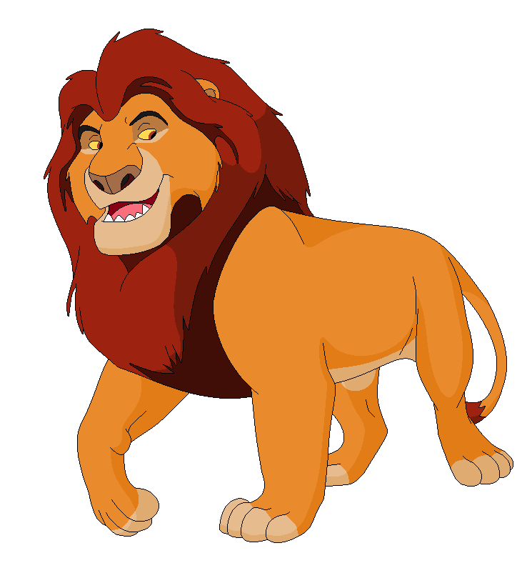

Mufasa (Verehrter König) ist ein großer, kräftiger, gelblich-oranger Löwe mit roter Mähne und Augen.Er ist der Sohn von Ahadi und Uru und großer Bruder von Scar (Taka). Er ist der Vater von Simba, Gefährte von Sarabi und war der wohl beliebteste König des geweihten Landes
Er ist der Sohn von Ahadi und Uru und großer Bruder von Scar (Taka). Er ist der Vater von Simba, Gefährte von Sarabi und war der wohl beliebteste König des geweihten Landes. Er ist ein weiser und gerechter Herrscher, der dem Kreislauf des Lebens folgt. Seine Herrschaft wird auf tragische Weise von seinem Bruder Scar beendet. Sein Sohn Simba sieht ihm sehr ähnlich und ist außerdem sein einziger Sohn. Mufasa bedeutet: Verehrter König. Als Mufasa noch ein sehr kleiner stürmischer junge war, lernte er die mutige Löwin Sarabi kennen. Die beiden wurden ein süßes Paar. Doch Scar wollte Mufasa töten und bekam daher seine Narbe. Mufasa verbrachte viel Zeit mit Sarabi. Als sie erwachsen wurden, waren sie König und Königin und brachten Simba zur Welt. Als Mufasa von seinem Bruder ermordet wurde, wurde Scar König, der daraufhin die Hyänen ins Königreich holte und damit überpopularisierte, was beinah den Untergang des Königreichs bedeutete.
Später erscheint er seinem Sohn als Geist, dieser stürzte darauf hin Scar vom Thron und das Königreich wurde gerettet.
| Name | Mufasa |
| Spezies | Löwe |
| Geschlecht | Männlich |
| Mähne | Dunkel-rot |
| Typ der Gestalt | Positiv |
| Charakter | Weise, zielstrebig, majestätisch, stark, feinfühlig, vernünftig, liebend, geduldig |
| Aussehen | Ein großer muskulöser Löwe, goldgelbes Fell, beige Bauch, Maul und Pfoten, braun-rote Mähne, rubinrote Augen |
| Ziel | Seinen Sohn Simba lehren, wie er ein König wird, wie man sein Land regiert und verteidigt |
| Kräfte und Fähigkeiten | Körperstärke und Geschick |
| Waffe | Fangzähne und Krallen |
| Schicksal | Wurde von Scar in die Schlucht gestoßen und von den Antilopen Gnu totgetreten |